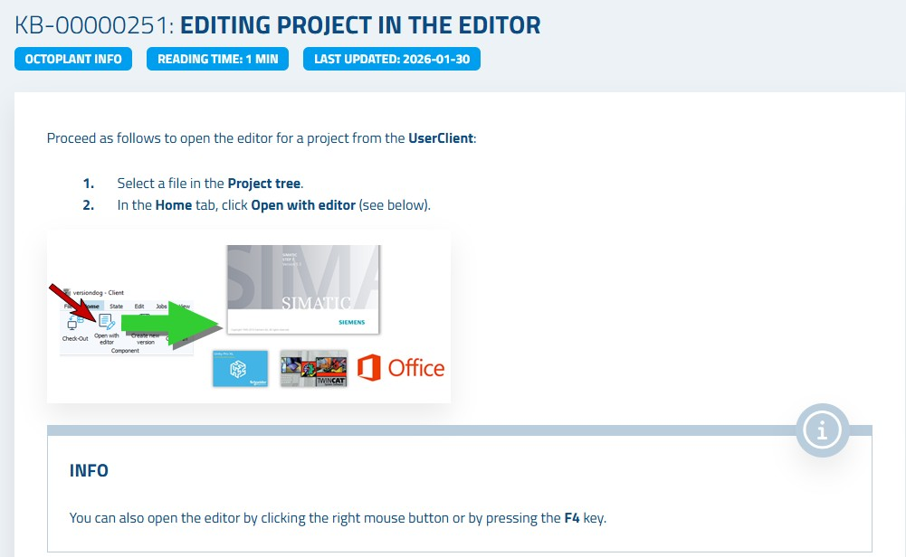

Chapter 8 of 15
Octoplant Hub and Dashboard
The octoplant Hub is a web-based portal that provides a centralized overview of all your automation assets, backup status, and system health — accessible from any browser. This chapter covers logging in, navigating dashboards, selecting servers, and exporting data.
1
Logging into the Octoplant Hub
The octoplant Hub is accessed via a web browser using the server URL configured by your administrator.
1
Open a web browser and navigate to the Hub URL. The format is:
https://[ServerName]:443 (the port may differ based on your configuration).2
On the login screen, enter your username. If your organization uses a domain, use the format
[Domain]/[Username].3
Enter your password. Click the eye icon to toggle password visibility if needed.
4
Click Login. The Hub dashboard opens.
2
Navigating the User Menu
The user menu provides quick access to account settings and system information.
1
Click the user icon in the top-right corner of the Hub.
2
From the dropdown menu you can: view the current username and Hub version, start a slideshow (for display screens in control rooms), change your password, or log out.
3
Selecting Servers for Dashboard Views
The Hub can display data from multiple Octoplant servers. You can filter dashboards to show data from specific servers.
1
At the top of any dashboard, locate the Server selection area.
2
Click the arrow on the right side of the server selection to open the dropdown.
3
Select All servers or choose one or more specific servers. The charts and key figures update immediately to reflect your selection.
4
Exporting Dashboard Data to CSV
Any table displayed in the Hub can be exported to a CSV file for further analysis in Excel or other tools.
1
Navigate to the dashboard containing the table you want to export.
2
Apply any filters you need (the export respects active filters).
3
Click the CSV Export button (download icon) in the top-right corner of the table.
4
The CSV Export dialog shows the export progress. The file is saved to your browser's Downloads folder.
Export LimitA maximum of 50,000 entries can be written to a single CSV file. If the table has more entries, use filters to narrow down the data before exporting.
Figure 8.1 – Octoplant Hub login screen and dashboard overview

📋
Summary
| Action | Where / How | Result |
|---|---|---|
| Login | Browser → Hub URL → Enter credentials | Dashboard accessible |
| User Menu | User icon (top-right) | Account settings and logout |
| Server Selection | Dashboard → Server selection dropdown | Filtered view per server |
| CSV Export | Table → CSV Export button | Data downloaded to CSV file |